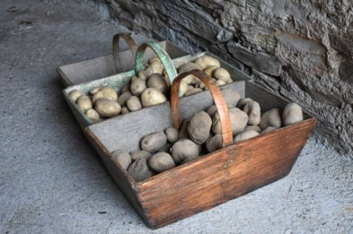

Картофель: когда и как копать, глубина вспашки перед посадкой
 Skip to content Про ферму Птицы, животные, растения и насекомые Меню Животные Кролики Шиншиллы Птицы Куры Утки Гуси Индюки Рыба Пчёлы Пчеловодство Продукты пчеловодства Деревья Яблоки Груши Вишня Черешня Сливы Кустарники Малина Ежевика Облепиха Огород Картофель Лук Помидоры (томаты) Грибы РекламаКогда и как правильно копать картошку
Главная » Огород » Картофель
Чтобы получить богатый урожай, нужно правильно обрабатывать землю. Картофель капризная культура и нуждается в глубокой вспашке почвы перед посадкой. О способах и приемах вспашки, а так же сроках выкапывания картофеля узнаем в статье.
Оглавление
Когда копать картошку Внешние признаки созревания картофеля Зачем собирать урожай вовремя Как копать картофель Мотоблоком Вручную Подготовка почвы к вспашке Как подготовить почву весной Глубина вспашки Чем обрабатывать землю перед посадкой Как и чем обрабатывать землю весной и осеньюКогда копать картошку
От момента посадки до момента сбора урожая должно пройти определенное количество времени. И это время зависит от нескольких факторов: выбранного сорта, времени посадки урожая, погодных условий. Сказать однозначно точное время сложно.
Есть некоторая зависимость сбора урожая: если картофель был посажен в конце апреля , то выкопать его нужно до начала августа . Однако как говорит статистика, благоприятное время для посадки – месяц май и выкапывать картофель нужно – в начале сентября. Хотя в среднем сбор урожая начинают уже с середины августа.
Срок выкапывания овоща напрямую зависит от сорта. Ранние сорта выкапывают на 4-6 недель раньше, чем поздние.Так при выкапывании картофеля следует знать, для каких целей будет использоваться овощ. Если нужна молодая картошка сразу для приготовления еды, то выкапывать ее нужно уже в конце июля .
Если молодая картошка нужна для приготовления еды, то ее нужно выкапывать в конце июляЕсли корнеплод должен будет храниться всю зиму, то ранний сбор производить не рекомендуется. Кожура должна стать более грубой иначе она картошка начнет быстро портиться и подгнивать.
Внешние признаки созревания картофеля
Картофель относится к растениям, которые выращиваются в больших количествах относительно других культур. Важно не упустить время сбора урожая и вовремя выкопать корнеплод . Важно уметь по внешним признакам понимать, что овощ созрел.
К основным признакам созревания картошки относят:
кустарники засыхают, вянут и желтеют ; кожура выкопанного картофеля грубеет, становится толще и плохо сдирается (в отличие от молодого картофеля); клубни накопили достаточное количество крахмала, чтобы надолго сохраниться и пережить зимний период. Это узнать легко, нужно капнуть на мякоть йод. Если мякоть стала сиреневая, то картофель готов к хранению; клубни при сборе легко отрываются от стеблей и корня . Сухая и пожелтевшая ботва признак созревших клубней картофеляЗачем собирать урожай вовремя
Если начать выкапывать растение раньше времени, то кожица клубней слишком хорошо сбирается и хранить ее можно будет только несколько месяцев.Чтобы клубни сохранились надолго, кожура должна загрубеть . Передерживать овощ в земле так же нельзя по следующим причинам:
картошку повреждают вредные насекомые или болезни; клубни сохнут и теряют массу; плоды загнивают от влажной почвы; овощ перемораживается от резкого наступление похолодания.Как копать картофель
Существует несколько способов выкапывания картофеля. Для этого нередко используют либо обычный садовый инвентарь – лопату или вилы, либо специальную агротехнику.
При этом копать вручную достаточно трудоемкий процесс, особенно для тех, кто имеет проблемы со здоровьем. Для обработки больших территорий лучше воспользоваться мотоблоком.
Выкапывание вручную очень трудоемкий процессМотоблоком
Уборку сельскохозяйственным оборудованием можно проводить после того, как вся ботва на участке будет срезана . Спустя 2-3 дня можно начинать выкапывать корнеплод.
Оборудование готовится заранее. Для этого рекомендуется обратить внимание на элементы вращения. Их нужно тщательно смазать специальным маслом, а части мотоблока, которые будут рыхлить почву, следует очистить от земли, глины, камней.
Если лезвия затупились, то их нужно предварительно наточить.Использование мотоблока или копка мотокультиватором подразумевает соблюдение инструкции:
кустарники заранее должны быть высажены в один ровный ряд , чтобы не пришлось маневрировать техникой по всему участку; расстояние между рядами должно быть 70-80 см , чтобы мотоблок не повредил колесами соседнюю гряду; при сборе урожая лучше применить дополнительные насадки для регулирования глубины; заранее нужно отрегулировать технику, чтобы она вскапывала легко; для того чтобы колеса мотоблока ехали равномерно, выкапывать картофель рекомендуется через гряду .
Вручную
Копать картофель вручную можно лопатой или «копачкой». Однако такой труд подходит не более чем для 5 соток земли . Если огород больше, лучше воспользоваться техникой – это быстрее и практичнее. Ручное выкапывание картофеля совершается следующим образом:
один человек копает под клубень. Для этого нужно загнать лопату около клубня и поднять его на поверхность; второй человек собирает картошку, идя позади.При ручном труде можно делать два дела сразу – собирать картошку и отсортировывать. Можно оставлять клубни подсыхать на поверхности рядов.
Перед началом сбора урожая рекомендуется подготовить место, куда будет убираться картошка. При сборе овоща рекомендуется не ронять его, чтобы избежать повреждений. Ручное выкапывание картофеля производится лопатой или вилами Удобнее, когда один человек выкапывает картофель, а второй достает его из земли и сортируетПодготовка почвы к вспашке
Чтобы подготовить землю к посадке урожая, нужно хорошо ее обработать, насытить кислородом. Для этого нужна глубокая обработка земли , чтобы корни и клубни хорошо развивались.
Существует несколько методов подготовки и обработки земли:
глубокая с помощью культиваторов и плоскорезов; вспашка плугом; с углублением пахотного горизонта.Как подготовить почву весной
Прежде всего, следует понимать, какая почва наиболее хороша для картошки. Совершенно не подходят глинистые влажные. Нельзя высаживать картофель в низинах, где есть вероятность скопления воды.
Самая подходящая земля – легкая, песчаная, рыхлая . Идеально если это чернозем, торфяной грунт . Если грунт окислен, то нужно перед посадкой обработать ее древесной залой, песком с навозом или компостом.
Если почва окислена ее необходимо обработать древесной золойГлубина вспашки
Выбор метода обработки зависит от земли и географического положения. Практически во всех регионах подходит зяблевая вспашка на глубину 30 см .
Нельзя вспахивать глубже, так как это может привести к сильному окислению почвы.Чем обрабатывать землю перед посадкой
Первый шаг для получения богатого урожая – это обогатить почву кислородом . Поэтому ее нужно обязательно рыхлить. Рыхление осуществляется в сухую погоду. Для этого нужно перекопать почву на глубину 15 см .
Перед тем как провести посадку картошки, нужно провести ряд процедур:
заранее перекопать почву на глубину 15-20 см , чтобы уничтожить вредителей; обработать почву специальными растворами для профилактики от фитофтороза; обогатить почву минералами и органикой; за год до плановой посадки картошки высадить на участке сидераты. Для обогащения почвы кислородом производится рыхлениеКак и чем обрабатывать землю весной и осенью
Весной нужно подождать, когда полностью растает снег, а почва прогреется на глубину 10см . Обработка земли производится в зависимости от ее состава:
Песчаные почвы нужно разрыхлить, а влажные глинистые разрыхлить сразу после того как почва подсохнет, а потом еще раз за день до посадки картофеля.При посадке картофеля нужно очистить землю от сорняков , насекомых, болезней. Внести удобрение и разравнять почву граблями.
Для обогащения почвы минералами и органикой можно использовать одну из смесей:
на 1 кв.м. 5кг перегноя, 100 гр золы и 50 гр нитрофоски смешать и добавить в землю перед посадкой; 5 кг компоста, 30гр нитрофоски, а между рядами подпитать 20гр аммиачной селитры и сульфатом калия.Если почва сильно заражена, то лучше обойтись без органики . При применении сидератов земля насыщается питательными элементами и является профилактическим методом от вредителей.
Высаживание сидератов до картофеля помогает обогатить землю полезными элементамиДля осенней обработки можно воспользоваться методом зяблевой вспашки . Она улучшает пахотный слой почвы, увеличивает ее способность сохранять полезные свойства.
Для повышения плодородности земли сразу после сбора урожая можно разбросать по огороду навоз. Так же вместе с навозом можно подкормить почву суперфосфатом 30г и сульфатом калия 15г на 1 кв.м. После сбора урожая ботву рекомендуется собрать и сжечь за участками огорода.
Чтобы собрать богатый урожай картофеля следует соблюдать все вышеперечисленные рекомендации. Хорошего вам урожая!